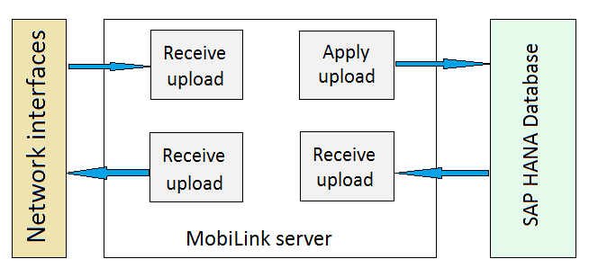

This page provides sizing information for applications using the Remote Data Sync service.
Although the only realistic answers to optimal resource planning are “It depends” and “Testing will show what you need”, this section aims to help you choose the right hardware parameters.
The figure below shows the major phases of a synchronization session. Though not complete, it covers many common use cases.

Roughly, the MobiLink server uses two thread pools – one for database connections, and one for the network side. These can be controlled by command-line options, although, by default, the Remote Data Sync service dynamically tunes the size of the worker thread pool to accommodate load changes.
When the Remote Data Sync server applies changes to the consolidated database and prepares changes to be sent to the remote database client, it typically does so by executing SQL statements or stored procedures that are invoked by MobiLink events. For example, to apply an upload MobiLink may execute insert, update, and delete statements for each table being synchronized; to prepare a download MobiLink may execute a query for each table being synchronized.
Database tuning is outside the scope of this document, but the load on the database can be substantial. Think of MobiLink as a concentrator of database load. All the operations that are carried out against the remote database while disconnected, in addition to the requests for updates to be downloaded to the remote database, are executed in two transactions (1 upload, 1 download) against the consolidated database. This can place a heavy load on the database.
You should know the number of concurrent synchronizations as a starting point, and from there on, calculate back on the required resources. Typically, this number is limited by RAM requirements. To estimate, you need a typical upload and download data volume as a starting point.
A machine with N MB of RAM can have C clients each with about V MB of upload or download data volume, where C = N/V.
Following this formula, for large synchronizations (< 20 MB), you can have:
The rate limiting steps of a synchronization are commonly:
Remote Data Sync servers are not typically CPU intensive, and typically require less than half the processing that is required by the consolidated database. When selecting the appropriate compute units for MobiLink, memory is more likely to limit the maximum sustainable throughput for a Remote Data Sync server than CPU.
Example:
For example, to support a peak sustained throughput of 50 synchronizations per second, with a client that takes 0.5 seconds to upload and download data, then the Remote Data Sync server should be able to support 50 simultaneous synchronizations in RAM to sustain this rate as a peak throughput. Assuming data transfer volumes per client are less than 80 MB (which is a very high number for data synchronization), a Standard machine would be a good choice to start with.